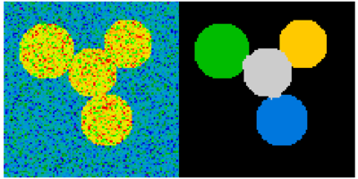

Image manipulation and processing using NumPy and SciPy#
Authors: Emmanuelle Gouillart, Gaël Varoquaux
This section addresses basic image manipulation and processing using the
core scientific modules NumPy and SciPy. Some of the operations covered
by this tutorial may be useful for other kinds of multidimensional array
processing than image processing. In particular, the submodule
scipy.ndimage provides functions operating on n-dimensional NumPy
arrays.
See also
For more advanced image processing and image-specific routines, see the
tutorial scikit-image: image processing, dedicated to the skimage module.
Image = 2-D numerical array
(or 3-D: CT, MRI, 2D + time; 4-D, …)
Here, image == NumPy array np.array
Tools used in this tutorial:
numpy: basic array manipulationscipy:scipy.ndimagesubmodule dedicated to image processing (n-dimensional images). See the documentation:
import scipy as sp
Common tasks in image processing:
Input/Output, displaying images
Basic manipulations: cropping, flipping, rotating, …
Image filtering: denoising, sharpening
Image segmentation: labeling pixels corresponding to different objects
Classification
Feature extraction
Registration
…
Opening and writing to image files#
Writing an array to an image file:
import scipy as sp
import imageio.v3 as iio
f = sp.datasets.face()
iio.imwrite("face.png", f) # uses the Image module (PIL)
plt.imshow(f)
<matplotlib.image.AxesImage at 0x10a017830>

face = iio.imread('face.png')
type(face)
numpy.ndarray
face.shape, face.dtype
((768, 1024, 3), dtype('uint8'))
dtype is uint8 for 8-bit images (0-255)
Opening raw files (camera, 3-D images)
face.tofile('face.raw') # Create raw file
face_from_raw = np.fromfile('face.raw', dtype=np.uint8)
face_from_raw.shape
face_from_raw.shape = (768, 1024, 3)
Need to know the shape and dtype of the image (how to separate data bytes).
For large data, use np.memmap for memory mapping:
face_memmap = np.memmap('face.raw', dtype=np.uint8, shape=(768, 1024, 3))
(data are read from the file, and not loaded into memory)
Working on a list of image files
rng = np.random.default_rng(27446968)
for i in range(10):
im = rng.integers(0, 256, 10000, dtype=np.uint8).reshape((100, 100))
iio.imwrite(f'random_{i:02d}.png', im)
from glob import glob
filelist = sorted(glob('random*.png'))
filelist
['random_00.png',
'random_01.png',
'random_02.png',
'random_03.png',
'random_04.png',
'random_05.png',
'random_06.png',
'random_07.png',
'random_08.png',
'random_09.png']
Displaying images#
Use matplotlib and imshow to display an image inside a
matplotlib figure:
f = sp.datasets.face(gray=True) # retrieve a grayscale image
plt.imshow(f, cmap=plt.cm.gray)
<matplotlib.image.AxesImage at 0x10a088140>

Increase contrast by setting min and max values:
plt.imshow(f, cmap=plt.cm.gray, vmin=30, vmax=200)
# Remove axes and ticks.
# Semicolon ends line to suppress repr of Matplotlib objects.
plt.axis('off');

Draw contour lines:
plt.imshow(f, cmap=plt.cm.gray, vmin=30, vmax=200)
plt.contour(f, [50, 200])
plt.axis('off');

For smooth intensity variations, use interpolation='bilinear'. For fine inspection of intensity variations, use
interpolation='nearest':
fix, axes = plt.subplots(1, 2)
axes[0].imshow(f[320:340, 510:530], cmap=plt.cm.gray, interpolation='bilinear')
axes[0].axis('off')
axes[0].set_title('Bilinear interpolation')
axes[1].imshow(f[320:340, 510:530], cmap=plt.cm.gray, interpolation='nearest')
axes[1].set_title('Nearest interpolation')
axes[1].axis('off');

See also
More interpolation methods are in Matplotlib’s examples.
Basic manipulations#
Images are arrays: use the whole numpy machinery.
face = sp.datasets.face(gray=True)
face[0, 40]
np.uint8(127)
# Slicing
face[10:13, 20:23]
array([[141, 153, 145],
[133, 134, 125],
[ 96, 92, 94]], dtype=uint8)
face[100:120] = 255
lx, ly = face.shape
X, Y = np.ogrid[0:lx, 0:ly]
mask = (X - lx / 2) ** 2 + (Y - ly / 2) ** 2 > lx * ly / 4
# Masks
face[mask] = 0
# Fancy indexing
face[range(400), range(400)] = 255

Statistical information#
face = sp.datasets.face(gray=True)
face.mean()
np.float64(113.48026784261067)
face.max(), face.min()
(np.uint8(250), np.uint8(0))
np.histogram
Exercise 51
Open as an array the
scikit-imagelogo (https://scikit-image.org/_static/img/logo.png), or an image that you have on your computer.Crop a meaningful part of the image, for example the python circle in the logo.
Display the image array using
matplotlib. Change the interpolation method and zoom to see the difference.Transform your image to greyscale
Increase the contrast of the image by changing its minimum and maximum values. Optional: use
scipy.stats.scoreatpercentile(read the docstring!) to saturate 5% of the darkest pixels and 5% of the lightest pixels.Save the array to two different file formats (png, jpg, tiff)
{kind=link}

Geometrical transformations#
face = sp.datasets.face(gray=True)
lx, ly = face.shape
# Cropping
crop_face = face[lx // 4: - lx // 4, ly // 4: - ly // 4]
# up <-> down flip
flip_ud_face = np.flipud(face)
# rotation
rotate_face = sp.ndimage.rotate(face, 45)
rotate_face_noreshape = sp.ndimage.rotate(face, 45, reshape=False)

Image filtering#
Local filters: replace the value of pixels by a function of the values of neighboring pixels.
Neighbourhood: square (choose size), disk, or more complicated structuring element.
{kind=link}
Blurring/smoothing#
Gaussian filter from scipy.ndimage:
face = sp.datasets.face(gray=True)
blurred_face = sp.ndimage.gaussian_filter(face, sigma=3)
very_blurred = sp.ndimage.gaussian_filter(face, sigma=5)
Uniform filter
local_mean = sp.ndimage.uniform_filter(face, size=11)

Sharpening#
Sharpen a blurred image:
face = sp.datasets.face(gray=True).astype(float)
blurred_f = sp.ndimage.gaussian_filter(face, 3)
Increase the weight of edges by adding an approximation of the Laplacian:
filter_blurred_f = sp.ndimage.gaussian_filter(blurred_f, 1)
alpha = 30
sharpened = blurred_f + alpha * (blurred_f - filter_blurred_f)

Denoising#
Noisy face:
f = sp.datasets.face(gray=True)
f = f[230:290, 220:320]
rng = np.random.default_rng()
noisy = f + 0.4 * f.std() * rng.random(f.shape)
A Gaussian filter smoothes the noise out… and the edges as well:
gauss_denoised = sp.ndimage.gaussian_filter(noisy, 2)
Most local linear isotropic filters blur the image (scipy.ndimage.uniform_filter)
A median filter preserves better the edges:
med_denoised = sp.ndimage.median_filter(noisy, 3)

Median filter: better result for straight boundaries (low curvature):
im = np.zeros((20, 20))
im[5:-5, 5:-5] = 1
im = sp.ndimage.distance_transform_bf(im)
rng = np.random.default_rng()
im_noise = im + 0.2 * rng.standard_normal(im.shape)
im_med = sp.ndimage.median_filter(im_noise, 3)

Other rank filter: scipy.ndimage.maximum_filter,
scipy.ndimage.percentile_filter
Other local non-linear filters: Wiener (scipy.signal.wiener), etc.
Non-local filters
Exercise 52
Create a binary image (of 0s and 1s) with several objects (circles, ellipses, squares, or random shapes).
Add some noise (e.g., 20% of noise)
Try two different denoising methods for denoising the image: gaussian filtering and median filtering.
Compare the histograms of the two different denoised images. Which one is the closest to the histogram of the original (noise-free) image?
See also
More denoising filters are available in skimage.denoising,
see the scikit-image: image processing tutorial.
Mathematical morphology#
See wikipedia for a definition of mathematical morphology.
Probe an image with a simple shape (a structuring element), and modify this image according to how the shape locally fits or misses the image.
Structuring element:
el = sp.ndimage.generate_binary_structure(2, 1)
el
array([[False, True, False],
[ True, True, True],
[False, True, False]])
el.astype(int)
array([[0, 1, 0],
[1, 1, 1],
[0, 1, 0]])

Erosion = minimum filter. Replace the value of a pixel by the minimal value covered by the structuring element.:
a = np.zeros((7,7), dtype=int)
a[1:6, 2:5] = 1
a
array([[0, 0, 0, 0, 0, 0, 0],
[0, 0, 1, 1, 1, 0, 0],
[0, 0, 1, 1, 1, 0, 0],
[0, 0, 1, 1, 1, 0, 0],
[0, 0, 1, 1, 1, 0, 0],
[0, 0, 1, 1, 1, 0, 0],
[0, 0, 0, 0, 0, 0, 0]])
sp.ndimage.binary_erosion(a).astype(a.dtype)
array([[0, 0, 0, 0, 0, 0, 0],
[0, 0, 0, 0, 0, 0, 0],
[0, 0, 0, 1, 0, 0, 0],
[0, 0, 0, 1, 0, 0, 0],
[0, 0, 0, 1, 0, 0, 0],
[0, 0, 0, 0, 0, 0, 0],
[0, 0, 0, 0, 0, 0, 0]])
# Erosion removes objects smaller than the structure
sp.ndimage.binary_erosion(a, structure=np.ones((5,5))).astype(a.dtype)
array([[0, 0, 0, 0, 0, 0, 0],
[0, 0, 0, 0, 0, 0, 0],
[0, 0, 0, 0, 0, 0, 0],
[0, 0, 0, 0, 0, 0, 0],
[0, 0, 0, 0, 0, 0, 0],
[0, 0, 0, 0, 0, 0, 0],
[0, 0, 0, 0, 0, 0, 0]])

Dilation: maximum filter:
a = np.zeros((5, 5))
a[2, 2] = 1
a
array([[0., 0., 0., 0., 0.],
[0., 0., 0., 0., 0.],
[0., 0., 1., 0., 0.],
[0., 0., 0., 0., 0.],
[0., 0., 0., 0., 0.]])
sp.ndimage.binary_dilation(a).astype(a.dtype)
array([[0., 0., 0., 0., 0.],
[0., 0., 1., 0., 0.],
[0., 1., 1., 1., 0.],
[0., 0., 1., 0., 0.],
[0., 0., 0., 0., 0.]])
Also works for grey-valued images:
rng = np.random.default_rng(27446968)
im = np.zeros((64, 64))
x, y = (63*rng.random((2, 8))).astype(int)
im[x, y] = np.arange(8)
bigger_points = sp.ndimage.grey_dilation(im, size=(5, 5), structure=np.ones((5, 5)))
square = np.zeros((16, 16))
square[4:-4, 4:-4] = 1
dist = sp.ndimage.distance_transform_bf(square)
dilate_dist = sp.ndimage.grey_dilation(dist, size=(3, 3), \
structure=np.ones((3, 3)))

Opening: erosion + dilation:#
a = np.zeros((5,5), dtype=int)
a[1:4, 1:4] = 1; a[4, 4] = 1
a
array([[0, 0, 0, 0, 0],
[0, 1, 1, 1, 0],
[0, 1, 1, 1, 0],
[0, 1, 1, 1, 0],
[0, 0, 0, 0, 1]])
# Opening removes small objects
sp.ndimage.binary_opening(a, structure=np.ones((3,3))).astype(int)
array([[0, 0, 0, 0, 0],
[0, 1, 1, 1, 0],
[0, 1, 1, 1, 0],
[0, 1, 1, 1, 0],
[0, 0, 0, 0, 0]])
# Opening can also smooth corners
sp.ndimage.binary_opening(a).astype(int)
array([[0, 0, 0, 0, 0],
[0, 0, 1, 0, 0],
[0, 1, 1, 1, 0],
[0, 0, 1, 0, 0],
[0, 0, 0, 0, 0]])
Application: remove noise:#
square = np.zeros((32, 32))
square[10:-10, 10:-10] = 1
rng = np.random.default_rng(27446968)
x, y = (32*rng.random((2, 20))).astype(int)
square[x, y] = 1
open_square = sp.ndimage.binary_opening(square)
eroded_square = sp.ndimage.binary_erosion(square)
reconstruction = sp.ndimage.binary_propagation(eroded_square, mask=square)

Closing: dilation + erosion#
Many other mathematical morphology operations: hit and miss transform, tophat, etc.
Feature extraction#
Edge detection#
Synthetic data:
im = np.zeros((256, 256))
im[64:-64, 64:-64] = 1
im = sp.ndimage.rotate(im, 15, mode='constant')
im = sp.ndimage.gaussian_filter(im, 8)
Use a gradient operator (Sobel) to find high intensity variations:
# Filter x and y.
sx = sp.ndimage.sobel(im, axis=0, mode="constant")
sy = sp.ndimage.sobel(im, axis=1, mode="constant")
# Combine x and y.
sob = np.hypot(sx, sy)
# Make a noisy image.
# Set random seed.
rng = np.random.default_rng(27446968)
noisy_im = im + 0.07 * rng.random(im.shape)
# Filter x and y.
n_sx = sp.ndimage.sobel(noisy_im, axis=0, mode="constant")
n_sy = sp.ndimage.sobel(noisy_im, axis=1, mode="constant")
# Combine x and y.
noisy_sob = np.hypot(n_sx, n_sy)

Segmentation#
Histogram-based segmentation (no spatial information)#
n = 10
l = 256
im = np.zeros((l, l))
rng = np.random.default_rng(27446968)
points = l*rng.random((2, n**2))
im[(points[0]).astype(int), (points[1]).astype(int)] = 1
im = sp.ndimage.gaussian_filter(im, sigma=l/(4.*n))
mask = (im > im.mean()).astype(float)
mask += 0.1 * im
img = mask + 0.2*rng.standard_normal(mask.shape)
hist, bin_edges = np.histogram(img, bins=60)
bin_centers = 0.5*(bin_edges[:-1] + bin_edges[1:])
binary_img = img > 0.5

Use mathematical morphology to clean up the result:
# Remove small white regions
open_img = sp.ndimage.binary_opening(binary_img)
# Remove small black hole
close_img = sp.ndimage.binary_closing(open_img)

Exercise 53
Check that reconstruction operations (erosion + propagation) produce a better result than opening/closing. Start with:
eroded_img = sp.ndimage.binary_erosion(binary_img)
reconstruct_img = sp.ndimage.binary_propagation(eroded_img, mask=binary_img)
Solution to Exercise 53
eroded_img = sp.ndimage.binary_erosion(binary_img)
reconstruct_img = sp.ndimage.binary_propagation(eroded_img, mask=binary_img)
tmp = np.logical_not(reconstruct_img)
eroded_tmp = sp.ndimage.binary_erosion(tmp)
reconstruct_final = np.logical_not(sp.ndimage.binary_propagation(eroded_tmp, mask=tmp))
np.abs(mask - close_img).mean()
np.float64(0.006406997327240807)
np.abs(mask - reconstruct_final).mean()
np.float64(0.0008223210826911714)
Exercise 54
Check how a first denoising step (e.g. with a median filter) modifies the histogram, and check that the resulting histogram-based segmentation is more accurate.
See also
More advanced segmentation algorithms are found in the
scikit-image: see scikit-image: image processing.
Useful algorithms from other packages#
Other Scientific Packages provide algorithms that can be useful for
image processing. In this example, we use the spectral clustering
function of the scikit-learn in order to segment glued objects.
from sklearn.feature_extraction import image
from sklearn.cluster import spectral_clustering
l = 100
x, y = np.indices((l, l))
center1 = (28, 24)
center2 = (40, 50)
center3 = (67, 58)
center4 = (24, 70)
radius1, radius2, radius3, radius4 = 16, 14, 15, 14
circle1 = (x - center1[0])**2 + (y - center1[1])**2 < radius1**2
circle2 = (x - center2[0])**2 + (y - center2[1])**2 < radius2**2
circle3 = (x - center3[0])**2 + (y - center3[1])**2 < radius3**2
circle4 = (x - center4[0])**2 + (y - center4[1])**2 < radius4**2
# 4 circles
img = circle1 + circle2 + circle3 + circle4
mask = img.astype(bool)
img = img.astype(float)
rng = np.random.default_rng()
img += 1 + 0.2*rng.standard_normal(img.shape)
# Convert the image into a graph with the value of the gradient on
# the edges.
graph = image.img_to_graph(img, mask=mask)
# Take a decreasing function of the gradient: we take it weakly
# dependent from the gradient the segmentation is close to a voronoi
graph.data = np.exp(-graph.data/graph.data.std())
labels = spectral_clustering(graph, n_clusters=4, eigen_solver='arpack')
label_im = -np.ones(mask.shape)
label_im[mask] = labels

Measuring object properties: scipy.ndimage.measurements#
Synthetic data:
n = 10
l = 256
im = np.zeros((l, l))
rng = np.random.default_rng(27446968)
points = l * rng.random((2, n**2))
im[(points[0]).astype(int), (points[1]).astype(int)] = 1
im = sp.ndimage.gaussian_filter(im, sigma=l/(4.*n))
mask = im > im.mean()
Analysis of connected components#
Label connected components: scipy.dimage.label:
label_im, nb_labels = sp.ndimage.label(mask)
nb_labels # how many regions?
28

Compute size, mean_value, etc. of each region:
sizes = sp.ndimage.sum(mask, label_im, range(nb_labels + 1))
mean_vals = sp.ndimage.sum(im, label_im, range(1, nb_labels + 1))
Clean up small connect components:
mask_size = sizes < 1000
remove_pixel = mask_size[label_im]
remove_pixel.shape
(256, 256)
label_im[remove_pixel] = 0
Now reassign labels with np.searchsorted:
labels = np.unique(label_im)
label_im = np.searchsorted(labels, label_im)

Find region of interest enclosing object:
slice_x, slice_y = sp.ndimage.find_objects(label_im)[3]
roi = im[slice_x, slice_y]
plt.imshow(roi);

Other spatial measures: scipy.ndimage.center_of_mass,
scipy.ndimage.maximum_position, etc.
Can be used outside the limited scope of segmentation applications.
Example: block mean:
f = sp.datasets.face(gray=True)
sx, sy = f.shape
X, Y = np.ogrid[0:sx, 0:sy]
regions = (sy//6) * (X//4) + (Y//6) # note that we use broadcasting
block_mean = sp.ndimage.mean(f, labels=regions, index=np.arange(1,
regions.max() +1))
block_mean.shape = (sx // 4, sy // 6)

When regions are regular blocks, it is more efficient to use stride tricks (Example: fake dimensions with strides).
Non-regularly-spaced blocks: radial mean:
sx, sy = f.shape
X, Y = np.ogrid[0:sx, 0:sy]
r = np.hypot(X - sx/2, Y - sy/2)
rbin = (20* r/r.max()).astype(int)
radial_mean = sp.ndimage.mean(f, labels=rbin, index=np.arange(1, rbin.max() +1))

Other measures#
Correlation function, Fourier/wavelet spectrum, etc.
One example with mathematical morphology: granulometry
def disk_structure(n):
struct = np.zeros((2 * n + 1, 2 * n + 1))
x, y = np.indices((2 * n + 1, 2 * n + 1))
mask = (x - n)**2 + (y - n)**2 <= n**2
struct[mask] = 1
return struct.astype(bool)
def granulometry(data, sizes=None):
s = max(data.shape)
if sizes is None:
sizes = range(1, s/2, 2)
granulo = [sp.ndimage.binary_opening(data, \
structure=disk_structure(n)).sum() for n in sizes]
return granulo
rng = np.random.default_rng(27446968)
n = 10
l = 256
im = np.zeros((l, l))
points = l*rng.random((2, n**2))
im[(points[0]).astype(int), (points[1]).astype(int)] = 1
im = sp.ndimage.gaussian_filter(im, sigma=l/(4.*n))
mask = im > im.mean()
granulo = granulometry(mask, sizes=np.arange(2, 19, 4))
<matplotlib.image.AxesImage at 0x117f4b860>

opened = sp.ndimage.binary_opening(mask, structure=disk_structure(10))
opened_more = sp.ndimage.binary_opening(mask, structure=disk_structure(14))
[<matplotlib.lines.Line2D at 0x10acb3a70>]

See also
More on image-processing:
The chapter on Scikit-image
Other, more powerful and complete modules: OpenCV (Python bindings), CellProfiler, ITK with Python bindings